Prabhakaran and His Family Are No More: Addressing the Truth is Essential
Prabhakaran and His Family Are No More: Addressing the Truth is Essential
Jaffna Monitor hellojaffnamonitor@gmail.com 5 V elupillai Manoharan, the elder brother of the late LTTE leader Velupillai Prabhakaran, currently resides in Denmark with his family. On May 18, 2024, marking the fifteenth anniversary of the end of the Sri Lankan civil war and the death of his brother, Manoharan organized a public commemorative ceremony at the DGI Huset conference center in Denmark. The primary objective of this event was to unequivocally declare that Prabhakaran and his immediate family are no longer alive, aiming to put an end to the financial frauds being perpetrated in their name. In an exclusive interview with the Jaffna Monitor, Manoharan discussed the motivations behind this ceremony. He emphasized that the commemoration was essential to counter the activities of a fraudulent individual named "Thuvaraga," who falsely claims to be Prabhakaran's daughter By: our special correspondent Exclusive Interview with Prabhakaran's Elder Brother Manoharan Prabhakaran and His Family Are No More: Addressing the Truth is Essential Manoharan (left) with his younger brother Prabhakaran in the early 1960s in Batticaloa.
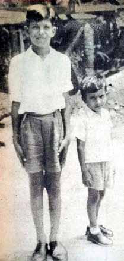
Jaffna Monitor hellojaffnamonitor@gmail.com 6 and is orchestrated by a large fraudulent syndicate. We present compelling excerpts from Manoharan's interview with the Jaffna Monitor: Why did your family organize a commemorative ceremony for your brother and his family after 15 years? What is the need for the commemoration now? You need to understand one thing: my brother, Prabhakaran, was not the type to escape from a war zone, leaving his fighters and commanders behind. Nor would he ever let his family escape while hundreds of other families perished. My brother was a true warrior, and abandoning his cause is something a true warrior could never imagine doing. He fought for the noble dream of Tamil Eelam and died on the battlefield alongside his family. From left to right: (second from left) Karthic Manoharan, nephew of Prabhakaran and son of Manoharan, (third from left) Manoharan, elder brother of Prabhakaran, (fourth from left) Vanajadevi Manoharan, Manoharan's wife at a public commemorative ceremony at the DGI Huset conference center in Denmark, commemorating Prabhakaran and his family on May 18th, 2024, the 15th anniversary of the brutal conclusion of the Sri Lankan war and the death of Prabhakaran. Prabhakaran with his wife Mathivathani, his elder son Charles Anthony, and his daughter Duvaraga in the early 1990s. The picture of Prabhakaran's family that was displayed at the public commemorative ceremony at the DGI Huset conference center in Denmark.
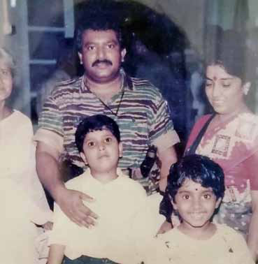
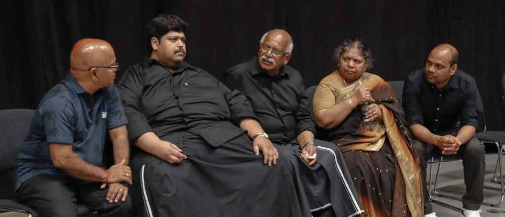
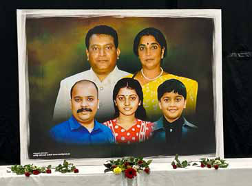
Jaffna Monitor hellojaffnamonitor@gmail.com 7 I am sure that none of my brother's family members—Prabhakaran, his wife Mathivathani, my nephews Charles Antony and Balachandran, or my niece Thuvaraga— are alive. All, except for young Balachandran, attained martyrdom on the battlefield, while Balachandran was killed cold-bloodedly by the Sri Lankan government. The need to organize this commemoration after 15 years arose from the emergence of a fake Thuvaraga. In recent months, someone has falsely claimed to be my niece Thuvaraga, deceiving the diaspora out of millions of dollars. As Prabhakaran's elder brother, I felt it was my responsibility to end this nonsense. Additionally, there have been false rumours that my brother is alive and living abroad. To those LTTE supporters who still believe that my brother is alive, I want to remind you of one incident among many. In 1987, when senior commanders Kumarappa and Pulendran were about to be taken to Colombo by the Sri Lankan army, they took cyanide capsules on my brother's orders and died. A person of such resolve could never escape to live abroad with his family. Thousands of LTTE fighters died for my brother because they believed in him. He would never betray their trust by cowardly escaping from the war zone. Claiming that my brother or his family is alive and living in a European country is an insult to his legacy. He was a true warrior and leader who would never abandon his fighters and people in their time of need. Why the commemoration after 15 long years? If we had stayed silent, the lies about the fake Thuvaraga could have been accepted as truth, and innocent people would continue to lose their money. As Prabhakaran's elder brother, I have a responsibility to reveal the truth about what happened to him and his family. If we do not speak out, these false narratives will dominate, and everyone will believe this nonsense. When did you come to know for sure that your brother is no more, given the ambiguity surrounding his death? I was 100 per cent certain that he would not escape the war zone. In 2009, around May 25, a week after my brother's martyrdom, Priyan (Jeyaragavan Ariyam), the LTTE representative in Denmark, came to our house and informed us that my brother Prabhakaran was no more. He told us that Prabhakaran attained martyrdom on May 18. Original Duvaraga (left) and the fake Duvaraga (right). Prabhakaran
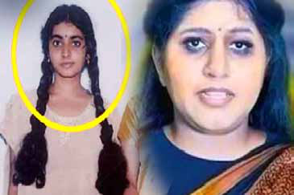
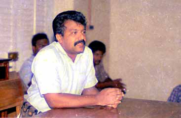
Jaffna Monitor hellojaffnamonitor@gmail.com 8 May 1983 - At a clandestine training camp in the depths of Udaiyarkaddu jungle, Prabhakaran himself leads the charge, gripping a G3 A3 German gun. This weapon, typically wielded by the Pakistan army, has a storied journey—smuggled from Pakistan to Bangladesh, then to Calcutta, before being acquired by the LTTE. At this pivotal moment, the LTTE was a tight-knit group of fewer than 30 members, with only 20-25 participating in this intense training session.
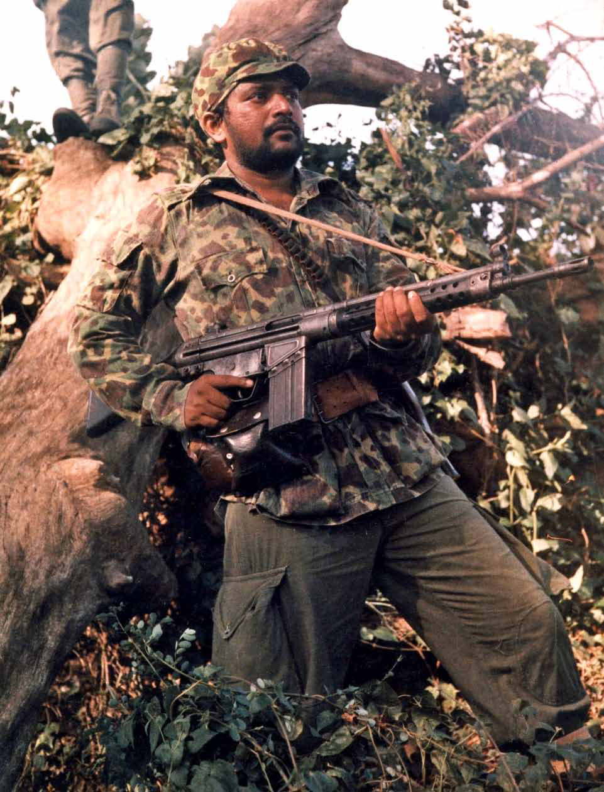
Jaffna Monitor hellojaffnamonitor@gmail.com 9 When did you last talk with your brother? I talked with him often until the end of 2008. However, after 2009, when the war intensified, our communication became restricted. I last spoke with him a few months before May 2009, probably in March. During that conversation, I also spoke with his family and our parents, who were with him. What did your brother tell you? He said the situation was getting out of hand and asked for advice since our parents were with him. I told him that due to the visa process restrictions, I couldn't Prabhakaran Manoharan Manoharan and his family with his father Velupillai and mother Parvathy Pillai. take our parents out immediately. Additionally, our mother, Parvathi Pillai, was paralyzed, which made obtaining a visa even more challenging. I conveyed this to my brother and said that our parents should do the same as others living in the war zone.
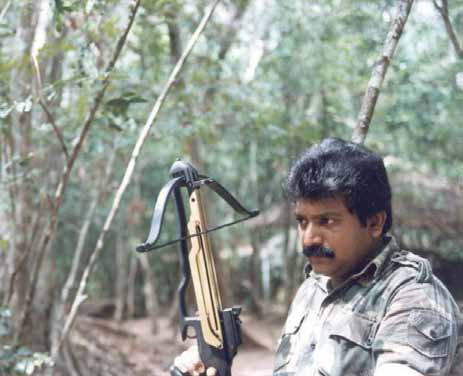
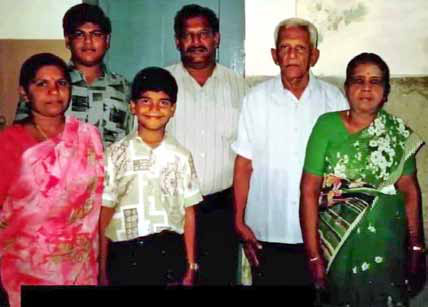
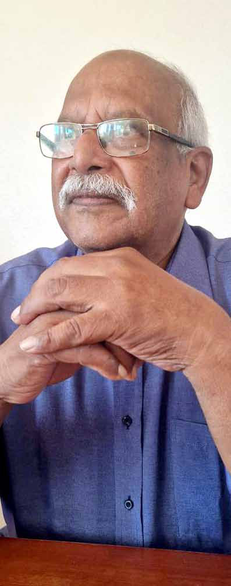
Jaffna Monitor hellojaffnamonitor@gmail.com 10 Did he mention that the war was about to end and that the LTTE was going to be defeated? No, he did not. He said they would continue to fight but acknowledged that the problems were overwhelming. However, he emphasized that they would fight bravely. Did he mention his end? No, he did not. But I was very certain that he would not escape the war zone, and I am sure he would not facilitate his family's escape either. On many occasions, we asked him to send at least one of his children to stay with us abroad, but he always refused. When did you request this? Many times. Even during the Indian army's presence in 1987, we requested it. We also asked about peacetime in 2004-05. In 1987, when Prabhakaran went into the forest to fight the Indian army, he lost contact with his family. During that time, his wife Mathivathani, son Charles Antony, and daughter Thuvaraga went to Denmark. Mathivathani's elder sister, Aruna Devi, and her elder brother, Sritharan, took them to Denmark. When Prabhakaran learned about this, he immediately called them back. I heard that he said, 'When my fighters' and commanders' children do not have the facility to go abroad, how can I send my wife and children there? Did you see any leadership qualities in him when he was younger? Look-wise, he was very average, and academically, he was also an average student. However, he exhibited different traits from an early age. When the army or police physically and mentally abused us, we would come home and remain silent. But my brother always insisted that we should fight back. He often criticized the non-violent protests of our Tamil leaders. Despite his young age, he frequently told us that the only language Sinhala chauvinists understand is retaliation. He believed they would never respond to peaceful protests from Tamils. He often said, 'The only language these Sinhala Prabhakaran's wife Mathivathani with their son Charles Anthony and daughter Duvaraga in Denmark around the 1987-88 period. Photo of infant Prabhakaran taken around early 1955.
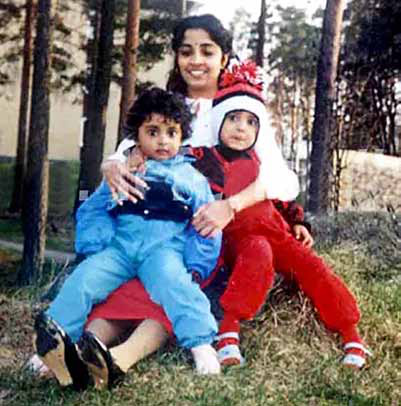
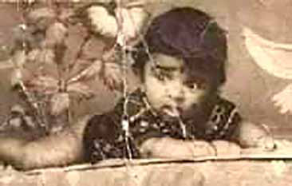
Jaffna Monitor hellojaffnamonitor@gmail.com 11 politicians and chauvinists understand is hitting back.' He believed that Tamils should retaliate and show their strength rather than passively enduring violence. What was his first involvement in militancy? He first joined the Tamil Students Federation (Tamil Manavar Peravai), headed by Sathiyaseelan, when he was only 16 years old. He was actively involved in the activities of the Tamil Students Federation, including making petrol bombs and hand grenades. Kuttimani (Selvarajah Yogachandran) and Thangathurai (Nadarajah Thangavelu) were also part of the Tamil Manavar Peravai. They were my classmates and friends. When Sathiyaseelan was arrested in 1973, the activities of the Tamil Students Federation came to a halt. How did your personal life get affected in your early years because of your brother's involvement in militancy? After my brother assassinated Alfred Duraiappah in April 1975, the police couldn't find him, so they started arresting me. The notorious CID officer in the Jaffna district, Tamil Inspector T.L.B. Bastianpillai, arrested Sathiyaseelan Notorious Tamil police inspector T.L.B. Bastianpillai, who headed the CID TULF (Tamil United Liberation Front) desk. He was infamous for his innovative methods of torturing suspects Kuttimani and Thangathurai A newspaper cutting of Eela Nadu, explaining the brutality of Inspector T.L.B. Bastianpillai, who headed the CID TULF (Tamil United Liberation Front) desk.
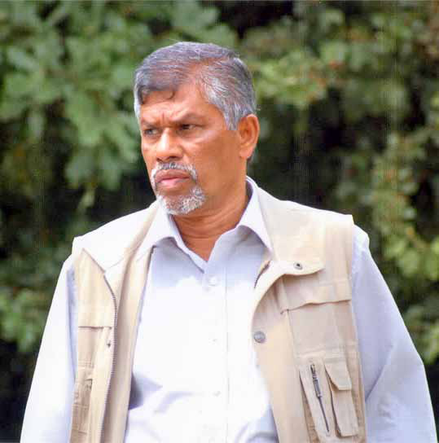
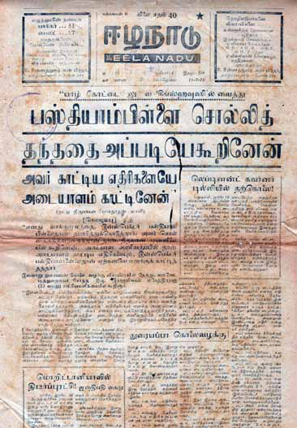
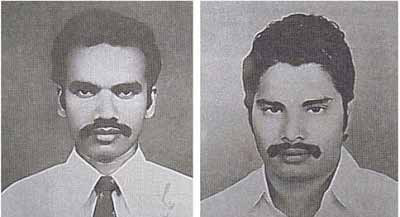
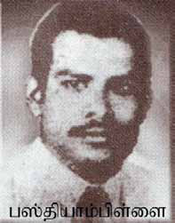
Jaffna Monitor hellojaffnamonitor@gmail.com 12 me multiple times and held me in custody at a place called King's House inside the Jaffna Fort. Instead of capturing my brother Prabhakaran, he targeted me. Similarly, instead of Kuttimani, he arrested his younger brother 'Katti,' and instead of Nadesathasan, he arrested his elder brother Maheshathasan. All of us were tortured and beaten black and blue. T.L.B. Bastianpillai also tried to force me to give a false confession about my brother. At that time, I was working at Vallai Textile, a well-known company. However, the CID's relentless harassment made it impossible for me to continue working. Due to this constant persecution, I had to leave the country in 1975. My father arranged a job for me on a ship, and on April 25, 1975, I left the country, never to return. Was it true that your brother Prabhakaran met a woman who was a victim of the 1956 ethnic violence and that this encounter changed his life? Yes, it is true. That woman was a distant relative who often visited our house seeking help. My father, being a generous man, always assisted her. Her hands had been severely burned by Sinhalese thugs during the 1956 violence, causing them to fuse together. Seeing her condition deeply affected my younger brother. He would often ask us why we didn't fight back and why we just endured all the injustices. Additionally, when we lived in Batticaloa, a lady who lived near our house frequently visited us. Her husband had been killed in the 1956 pogrom. She often narrated the injustices she had endured. My brother, being only 7 or 8 years old, would listen to these stories while sitting on our mother's lap. I believe these experiences of encountering innocent victims profoundly changed his way of thinking. How were your parents' characters? Were they brave or innocent? My father was a government servant, working as a land officer and later as the district land officer. He could have easily become an Assistant Government Agent (AGA) or Divisional Revenue Officer (DRO), but he was content with his position as a land officer. During his tenure, he initiated several land schemes, such as the Muthyankatu Land A rare photo of teenage Prabhakaran
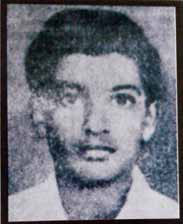
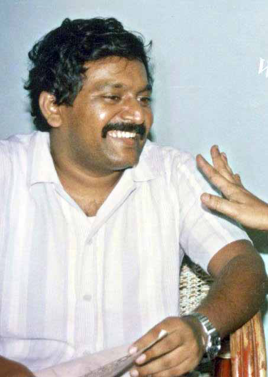
Jaffna Monitor hellojaffnamonitor@gmail.com 13 Scheme and the Vishwamadu Educated Student Land Scheme, all under his supervision. He worked diligently until his natural retirement in 1983. He was a very honest land officer. Once, I met X. M. Sellathambu, a former MP of the Illankai Tamil Arasu Kachchi (Federal Party) in Vavuniya. He told me about my father's integrity. He said that when the new Vavuniya town was being built, my father, who was in charge of allocating land for shops, theatres, and schools, was advised by many to take some prime land in his relatives' names. But he refused. I am certain that he did not earn a single penny illegally during his years as a government servant. He never drank alcohol, smoked, or even chewed betel leaves. My brother Prabhakaran inherited these good qualities from my father. My mother, Parvathy Pillai, was a different character. She was very brave. While my father was soft-spoken, my mother was courageous. She spoke boldly to the police who came searching for Prabhakaran. Once, Inspector Bastianpillai came to our house and asked, "Where is your younger son?" My mother boldly replied, "That is your job to find out." He then slapped her on the cheek and threatened to bring Prabhakaran back like a wounded man from an aeroplane accident. My mother boldly retorted, "Don't talk; do it." This infuriated them, and they arrested her and took her to the police station. When did Prabhakaran leave your house forever? It was in 1974 when Prabhakaran left our house for good. That evening, a known friend of his came to our home and called for Prabhakaran by name. Prabhakaran wasn't there at the time, and another person had accompanied his friend. When Prabhakaran returned, we informed him about the visitors. He told us that the friend who had come calling had already been arrested by the police, and he was curious to know who had accompanied him. Prabhakaran's father Velupillai with his wife Parvathy
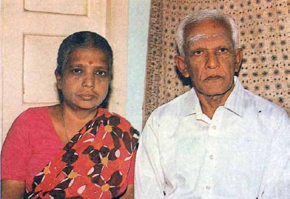
Jaffna Monitor hellojaffnamonitor@gmail.com 14 Prabhakaran then took out a file containing photos of CID officers, and I identified the man who had come with his friend. Prabhakaran told me that it was Bastianpillai. That very night, a large group of army and police officers came to our house to arrest him. However, Prabhakaran was not in his bed; he had escaped and never returned home. Before escaping, he meticulously destroyed all pictures of himself from the family albums. The only photo the police had of him was taken during his GCE O/L exams for his admission card. In that photo, he had cut his hair short and looked very different from his usual self. He was very cautious about his personal safety, even from a young age. Did you observe that your brother had the traits of a leader who could potentially lead an armed struggle? No, he was just my younger brother, and I didn't see any particular qualities that stood out as those of a future leader. In fact, both my father and I did not want him to go into armed struggle. We advised him many times against it. My father even arranged a job for him on a ship, hoping he would choose a different path. But he was not ready to listen to us. Who is behind the fake Thuvaraga? There is a large syndicate involved in this deception. Organizations such as the Tamil Coordinating Committee (TCC) and the World Tamil Coordinating Committee (WTCC) are implicated in this fraudulent scheme. The TCC, for example, used to collect 200 kroner every month from each family in Denmark. We contributed from 1998 until 2006. In 2006, we discovered that the TCC was not sending the money to Tamil Eelam as intended but was instead diverting A rare photo of teenage Prabhakaran. sritharan
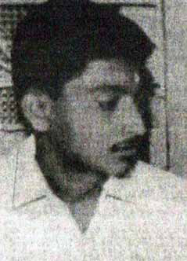
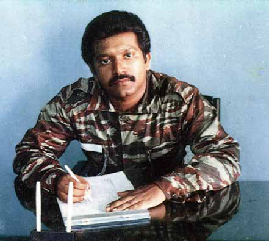
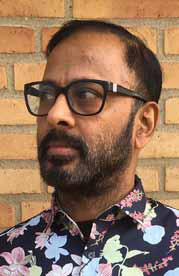
Jaffna Monitor hellojaffnamonitor@gmail.com 15 it for personal gain. Once we identified this misuse, we stopped our contributions. Prabhakaran's wife, Mathivathani's elder brother, Sritharan, and her elder sister, Aruna Devi are also part of this syndicate. They provide a legitimate face to this scheme. Additionally, fraudsters such as Seraman, Chinnaiah Mouleeswaran, Gobi Sivanthan, Kirupakaran, Inpha Tamil Radio owner Balasingam Prabaharan, Jeyabalan alias Abdulla, and a few others are deeply involved in this operation. Working for Seraman from Denmark are Seharan Kandasamy, Sivabaskaran Sinnathamby, and Pancharajah Bach Thambipillai. These individuals and organizations have orchestrated a complex network of deceit. They exploit the emotional and financial From left to right: Mathivathani's elder brother Sritharan Erampu, Prabhakaran's wife Mathivathani, Mathivathani's father Erampu, Mathivathani's mother Sinnamma. From left to right: Mathivathani's elder sister Aruna Devi's second daughter Vidya, Aruna Devi, Prabhakaran's elder son Charles Anthony, daughter Duvaraga, Mathivathani, and Prabhakaran, during peace time around 2004-05. Seraman
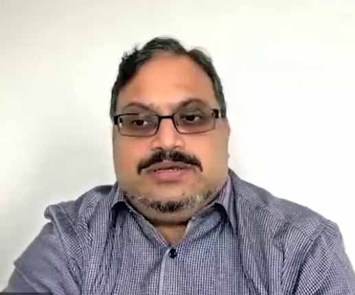
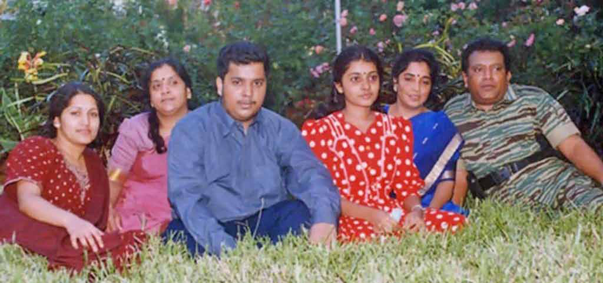
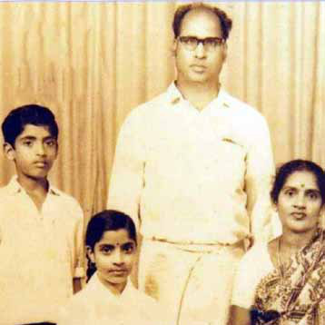
Jaffna Monitor hellojaffnamonitor@gmail.com 16 support of the Tamil diaspora by falsely claiming that Thuvaraga, Prabhakaran's daughter, is still alive. This claim is used to siphon funds from well-meaning supporters who believe they are aiding Prabhakaran's family and the Tamil cause. Why is Mathivathani's family involved in these fraudulent activities? It's all about easy money. By falsely claiming that Thuvaraga is alive, they can potentially Abdulla Photo of the public commemorative ceremony at the DGI Huset conference center in Denmark, arranged by Manoharan's family. Mathivathani's elder brother Sritharan (left) with Mathivathani's younger brother Balachandran, also known as Captain Arun. He died in Kilinochchi Puliyampokkanai, committing cyanide suicide during an encirclement by Indian forces in April 1988. Later, Prabhakaran and his wife named their last born son Balachandran in his memory. Prabhakaran's wife Mathivathani (second from left) with her mother Sinnamma (extreme left), Duvaraga (right side of her), and her father Erampu (left) in front of the name sign for Anaiyiravu (Elephant Pass). The name plate notes the Jeyanthan Regiment of Eastern Fighters' war cry, 'vq;Fk; nry;Nthk; vjpYk; nty;Nthk;" (We will go everywhere, we will conquer everything).
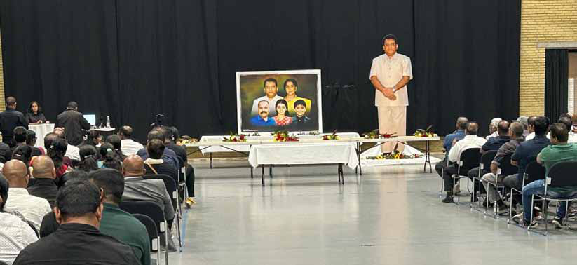
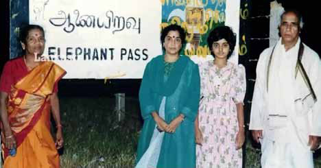
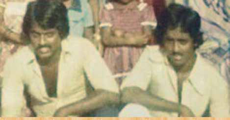
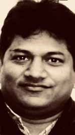
Jaffna Monitor hellojaffnamonitor@gmail.com 17 earn millions of dollars without having to work hard or do anything significant. Sritharan has been a fraudster for a long time. In 2004, he brought a man to me, claiming he was from Tamil Eelam and needed help. I gave him 25,000 kronor, but later, I found out that the man was actually from Italy, not Tamil Eelam. I even informed my brother Prabhakaran about this. Ironically, Aruna Devi's three daughters are doctors in Denmark and earn well, yet she chose this fraudulent path. When did you last talk with your father? We were able to talk with him and our mother Prabhakaran's elder sister Vinothini Rajenthiram, who lives in Canada. Former District Medical Officer of Valvettithurai Regional Hospital, Doctor Mayilerum Perumal with Prabhakaran's mother, Parvathy Amma, in Uurani Hospital. Parvathy Amma's funeral until May 2009. When they crossed over to the army-controlled side, we lost touch and couldn't find their contact information. We reached out to various Tamil nationalist MPs, but they didn't help us. A few MPs indirectly asked for money to facilitate communication with our parents. Who are they? I don't want to name them, but they are still there, occupying their seats in Parliament.
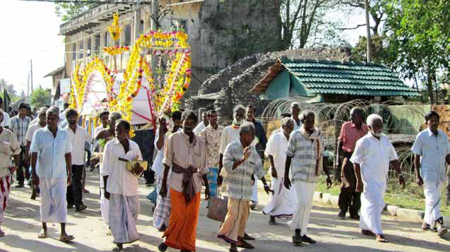
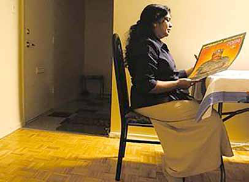
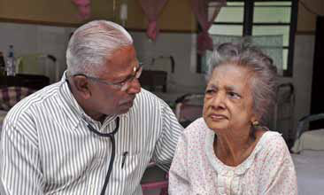
Jaffna Monitor hellojaffnamonitor@gmail.com 18 Former Member of Parliament Sivajilingam has made a few allegations about you, claiming that you did not help your parents. How do you respond to these accusations? First of all, Sivajilingam is not related to us, not even distantly. He used our name for his own fame, trying to portray himself as a close relative of Prabhakaran to gain money and fame. When my father passed away, our brother (not a direct brother but a close family relation) was about to handle the cremation. However, Sivajilingam somehow intervened, used his influence, and performed the final rites. He then profited substantially from this. Even my sister, who resides in Canada, sent him 4 lakhs. Additionally, he received money from various diaspora associations. I know he collected money from many people and foreign associations using my parents' funeral as an excuse. He is a dishonest person who exploited our family's situation and name for personal gain, and he continues to profit from it. What would you like to tell the LTTE supporters who still idolize your brother and somehow long for his miraculous return? My brother, Prabhakaran, and his entire family are no more. They all attained martyrdom. It is essential to accept this reality. Please do not fall prey to these fraudsters who claim to be my brother's family. These individuals are exploiting your emotions and the legacy of my brother for their own gain. If you genuinely want to honour Prabhakaran's memory, focus on helping our people in Sri Lanka. Many Tamils who were affected by the war still live in abject poverty and face daily struggles. They need your support more than ever. Channel your efforts and resources toward rebuilding the lives of these war- affected individuals. Support initiatives that provide education, healthcare, and economic opportunities for them. Remember, the best way to keep my brother's legacy alive is by working towards the betterment of our Tamil community and ensuring that those who have suffered do not continue to live in hardship. Your contributions can make a significant difference in their lives.
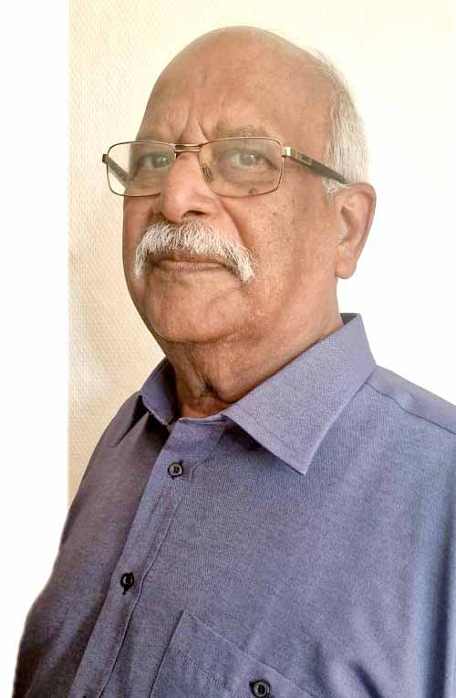
Jaffna Monitor hellojaffnamonitor@gmail.com 19 Jaffna, Sri Lanka - In a monumental stride towards advancing medical education and healthcare in the Northern Province, President Ranil Wickremesinghe inaugurated the cutting-edge Clinical Training and Research Block at the University of Jaffna's Faculty of Medicine on May 24th. This impressive facility, constructed with an investment of LKR 942 million, is set to revolutionize medical training and treatment in the region. Despite its inauguration coinciding with the imminent presidential election, experts unanimously agree that this development marks a significant milestone for Jaffna, promising enhanced healthcare services and educational opportunities for future generations. Pioneering Healthcare with Hiccups: Jaffna University's Latest Medical Block By: Jaffna Monitor Reporter
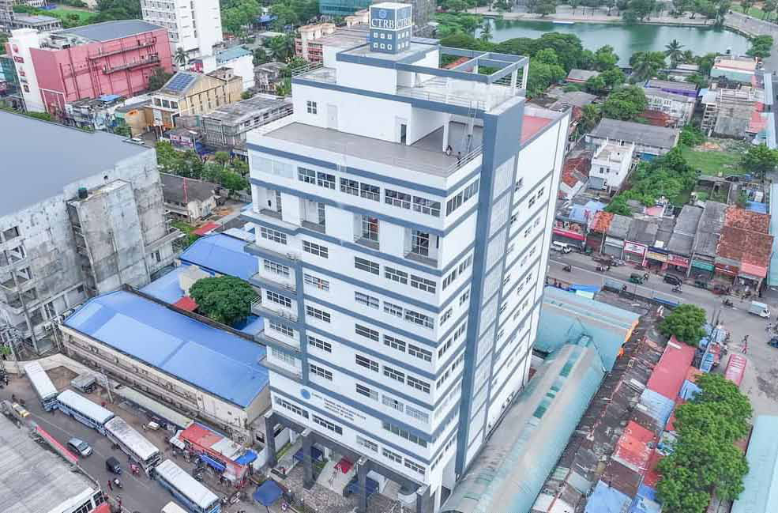
Jaffna Monitor hellojaffnamonitor@gmail.com 20 Spanning 6,000 square meters, the newly inaugurated building is the first of its kind to be constructed in 46 years at the University of Jaffna. According to a press release from the President's office, it includes multiple lecture halls, clinical skills laboratories, an auditorium, and essential medical facilities such as operating theatres, recovery rooms, and research labs. The facility will accommodate 1,200 students for both undergraduate and postgraduate clinical training, fostering international research collaborations. "The construction of this building marks a significant milestone. With this new facility, we are taking a major step towards elevating the standards of medical education in the Northern Province," President Wickremesinghe remarked during the ceremony. The President's media unit highlighted that the Clinical Training and Research Block is equipped with patient waiting rooms, consultation rooms, and specialized units dedicated to endoscopy, vascular surgery, and mammography. It also houses research laboratories, a forensic investigation unit, and a museum for educational purposes. The Fertility Care Unit, managed by the Department of Obstetrics and Gynaecology, will offer specialist consultations, diagnostic procedures, and treatment facilities. The Clinical Trials Unit (CTU) will facilitate clinical research on locally adapted, cost- effective treatment methods, while the Clinical Genetics Unit (CGU) will focus on genetic cost-effectiveness, disease management, and preventive measures. In his address, President Wickremesinghe unveiled ambitious plans to elevate Jaffna Hospital to a national hospital, aiming to ensure top-tier healthcare standards in the Northern Province. Following his visit, a formal proposal to upgrade Jaffna Teaching Hospital was swiftly submitted to the Sri Lankan Cabinet. This proposal, championed by Minister Douglas Devananda, received President Wickremesinghe's endorsement during the Cabinet meeting on May 27th. As a result of this initiative, Jaffna Teaching Hospital is poised for significant enhancements, including improvements in physical infrastructure and an increase in staffing. This development is expected to elevate the hospital's capacity to provide high-quality healthcare services and support the advanced training of medical professionals. Experts say that if these improvements are done honestly, they will create an optimal environment for delivering superior healthcare services to the people of the Northern Province, marking a transformative step forward for the region. When contacted by the Jaffna Monitor,
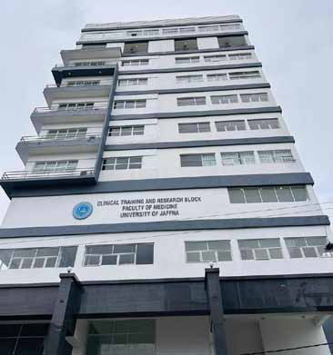
Jaffna Monitor hellojaffnamonitor@gmail.com 21 Minister Douglas Devananda stated, "President Ranil was very keen on upgrading Jaffna Teaching Hospital to a national hospital. He asked me to submit a proposal in the last Cabinet meeting, which was endorsed by the President and approved by the Cabinet." Professors from the Jaffna Medical Faculty acknowledged that the newly opened Clinical Training and Research Block is indeed a significant step forward for medical education and healthcare in the region. However, they also pointed out that the facility still faces substantial challenges due to a lack of basic amenities. They provided a detailed overview of the building's intended purposes, highlighting its potential to transform medical training and research. Despite this, the professors emphasized the need for additional resources and improvements to fully realize the facility's capabilities and address its current shortcomings. The Clinical Training and Research Block was constructed with three main objectives, they said: Undergraduate and Postgraduate Teaching: The primary purpose of the building is to facilitate clinical training for both undergraduate and postgraduate students. This includes MBBS students (student doctors), registrars, and senior registrars in surgical specialties. The training encompasses examining patients, performing procedures, and conducting various medical investigations. This hands-on experience is essential for developing competent medical professionals. Service Delivery to the Public: The second goal is to enhance service delivery to patients. By performing surgeries and medical procedures, the aim is to reduce patient waiting times and alleviate overcrowding in hospitals. This improvement will increase patient comfort and streamline the healthcare process, benefiting
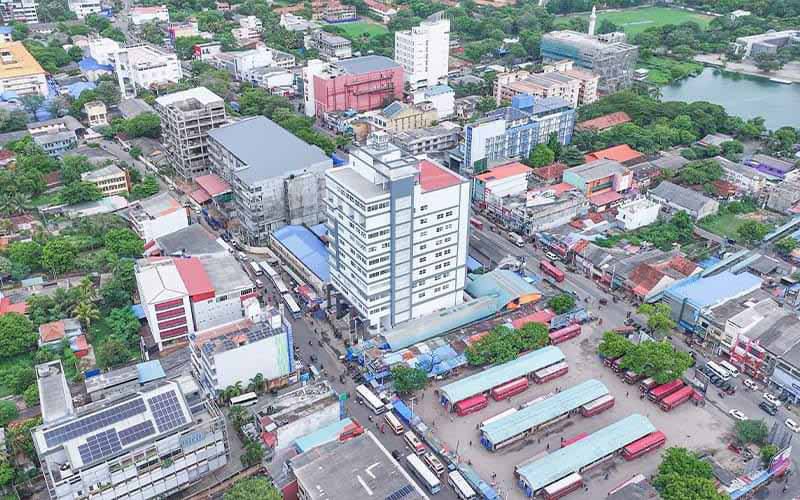
Jaffna Monitor hellojaffnamonitor@gmail.com 22 both patients and the healthcare system. Medical Research: The third objective is to facilitate medical research, contributing to advancements in medical science and healthcare practices. However, professors pointed out that despite the significant investment of over LKR 900 million, the building currently lacks the necessary facilities. They emphasized that it is essentially just a physical structure at this stage, as the government has not yet provided the funds required for essential furnishings and medical instruments. An additional allocation of around LKR 150 million is needed to fully operationalize the building. They told the Jaffna Monitor that this crucial funding shortfall must be addressed to ensure the facility can effectively meet its intended purposes. Current Challenges and Priorities Furniture and Basic Equipment: The first priority is to acquire furniture such as chairs, tables, and cupboards for staff, students, and medical practitioners. Day Surgical Unit: A day surgical unit is being built where patients can undergo surgeries in the morning and return home by evening. This will be the first such unit in the government sector in Sri Lanka. The benefits include improved patient comfort, reduced hospital overcrowding, and increased staff motivation. To establish this unit, professors explained that theater instruments, laparoscopic and endoscopic equipment, anesthetic instruments, beds, monitors, and cardiac monitors are needed. Advanced Reproductive Technology (ART) Theater Complex: This facility will provide advanced infertility treatments like IVF, making them accessible to economically disadvantaged patients. This will be the first government sector ART center in Sri Lanka, offering treatments typically costing LKR 1.5 to 2 million. Laboratories and Diagnostic Facilities: Plans include building laboratories for blood investigations, endoscopic procedures, mammograms for early breast cancer detection, neurological investigations, andrology investigations (such as seminal fluid analysis), and vascular investigations. Additionally, ultrasound machines and digital histology equipment are needed. These facilities will enhance diagnostic capabilities and allow for advanced genetic testing, such as karyotyping and molecular tests. Long-Term Vision Achieving these priorities will enable the provision of excellent service to the public and deliver high-quality clinical education to undergraduate and postgraduate students. In the long run, this unit aims to become a center of excellence, offering free services to the public and promoting health tourism. This initiative is expected to attract the diaspora and generate revenue that can be reinvested into the hospital, ultimately benefiting the local population. The professors concluded that while the building represents a great start, there is still a long way to go to realize its full potential and provide the intended benefits to the medical community and the public.
Jaffna Monitor hellojaffnamonitor@gmail.com 23 T he Tamil National People's Front (TNPF), true to its often confusing and aimless political stance, has called on Sri Lankan Tamils to boycott the upcoming presidential election. They argue that Tamils should refrain from voting until their aspirations are fulfilled. However, the TNPF has not provided any reasons or logic behind why they are still contesting in the parliamentary elections, nor why their President Gajendrakumar Ponnambalam and Secretary- General S. Kajendren are happily occupying their parliamentary seats. "The Sri Lankan government views the Tamil homeland as an enemy," stated the TNPF in a rhetoric- heavy yet logic-lacking announcement. "They continue their Buddhization, militarization, and structural genocide in our homeland. As long as the majority representation is in their hands, they will not consider Tamils as their people but as enemies. Therefore, the only option left to the Tamil people is to reject the presidential election," the TNPF declared. Yet, how does this logic hold up during parliamentary elections? Does the Sri Lankan government suddenly view Tamils as close relations, making it okay for the TNPF to participate? The TNPF has provided no clarity on this glaring inconsistency. Jaffna political observers quip, "Even if Ponnambalam's son pulls off Olympic-level somersaults, he won't land in the president's seat. So, the TNPF is flipping out of the presidential race. But hey, since there's a shot at making him an MP, they're all in for the parliamentary elections! The TNPF, in their naive optimism, claimed that boycotting the elections would send a crystal-clear message to the government: the Tamils are stepping out of this electoral dance. How would this grand gesture resonate, or why would the government care about the Tamils boycotting or casting votes? Well, the TNPF left that part as mysterious as the strategy itself. Switching gears in their marathon statement, the TNPF made a rather sensible point, highlighting that nearly half of Sri Lanka's salary budget is splurged on defence personnel, even with no active conflict. "The Security Forces are a colossal burden on the economy, but they refuse to admit it," their epic declaration noted. TNPF's Guide to Political Gymnastics: Boycotting Presidential Polls, Crawling into Parliamentary Elections!
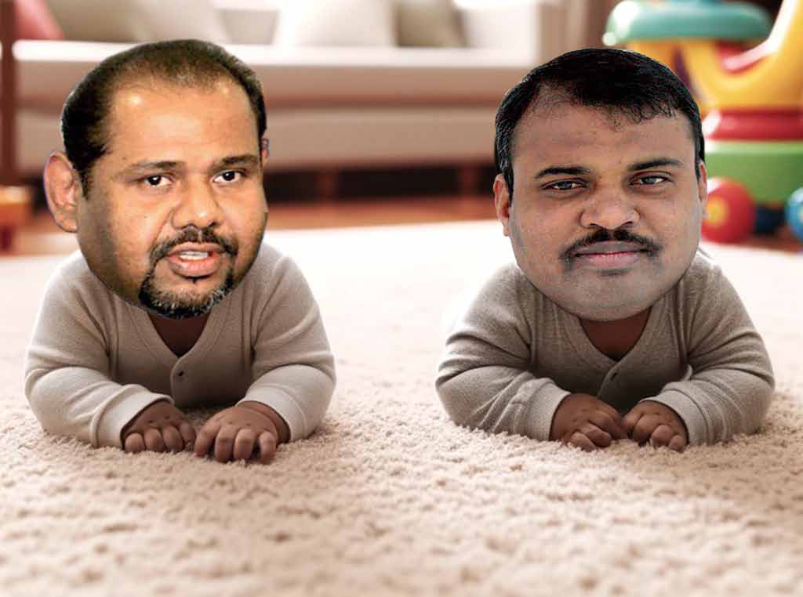